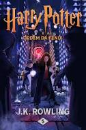

Potter e a Ordem da Fênix

Sinopse
Harry Potter and the Order of the Phoenix é o quinto livro dos
sete volumes da série de fantasia Harry Potter, tanto em termos
cronológicos como em ordem de publicação, da autora inglesa J. K. Rowling.
Fonte: Google Books
| Data |
Autor |
Idioma Original |
Gêneros |
Número de páginas |
Editora |
| 21 de Junho de 2003 |
J. K. Rowling |
Inglês |
Romance, Ficção juvenil, Literatura fantástica |
702 |
Rocco |
O Senhor dos Anéis: A Sociedade do Anel

Sinopse
Harry Potter and the Order of the Phoenix é o quinto livro dos
sete volumes da série de fantasia Harry Potter, tanto em termos
cronológicos como em ordem de publicação, da autora inglesa J. K. Rowling.
Fonte: Google Books
| Data |
Autor |
Idioma Original |
Gêneros |
Número de páginas |
Editora |
| 29 de julho de 1954 |
J.R.R. Tolkien |
Inglês |
Literatura fantástica, Alta fantasia, Ficção de aventura, Romance de cavalaria, Fantasia heroica |
576 |
HarperCollins Brasil |
Percy Jackson E Os Ladroes Do Olimpo

Sinopse
The Lightning Thief é o primeiro livro da série Percy Jackson & os Olimpianos
baseado na mitologia grega, escrito por Rick Riordan., que narra a vida do
adolescente Percy Jackson que descobre ser um semideus, filho de Poseidon
com uma humana.
Fonte: Google Books
| Data |
Autor |
Idioma Original |
Gêneros |
Número de páginas |
Editora |
| 28 de junho de 2005 |
Rick Riordan |
Inglês |
Romance, Mitologia grega, Fantasia, Literatura fantástica, Ficção juvenil, Alta fantasia |
326 |
Casa das Letras |
Abusado: O dono do Morro Dona Marta
Sinopse
Abusado - O dono do Morro Dona Marta é um livro, terceira obra do escritor
gaúcho Caco Barcellos, lançado em 2003.
Fonte: Google Books
| Data |
Autor |
Idioma Original |
Gêneros |
Número de páginas |
Editora |
| 1 de janeiro de 2003 |
Caco Barcellos |
Portugues |
jornalismo investigativo, investigações, documentários |
557 |
Editora Record |
Falcão: meninos do tráfico
Sinopse
Relata os bastidores da produção de um documentário sobre o universo
dos meninos que trabalham no tráfico de drogas em diversas partes do Brasil,
no período de 1998 a 2006.
Fonte: Google Books
| Data |
Autor |
Idioma Original |
Gêneros |
Número de páginas |
Editora |
| 1 de janeiro de 2006 |
MV Bill, Celso Athayde |
Portugues |
jornalismo investigativo, investigações, documentários |
251 |
Central Única das Favelas |
Estação Carandiru
Sinopse
O médico Drauzio Varella relata dez anos de atendimento voluntário
na Casa de Detenção de São Paulo, o maior presídio do Brasil, e mostra como
um código penal não-escrito organizava o comportamento da população carcerária.
Fonte: Google Books
| Data |
Autor |
Idioma Original |
Gêneros |
Número de páginas |
Editora |
| 1 de janeiro de 1999 |
Drauzio Varella |
Portugues |
Crime real, Narrativa pessoal |
232 |
Companhia das Letras |